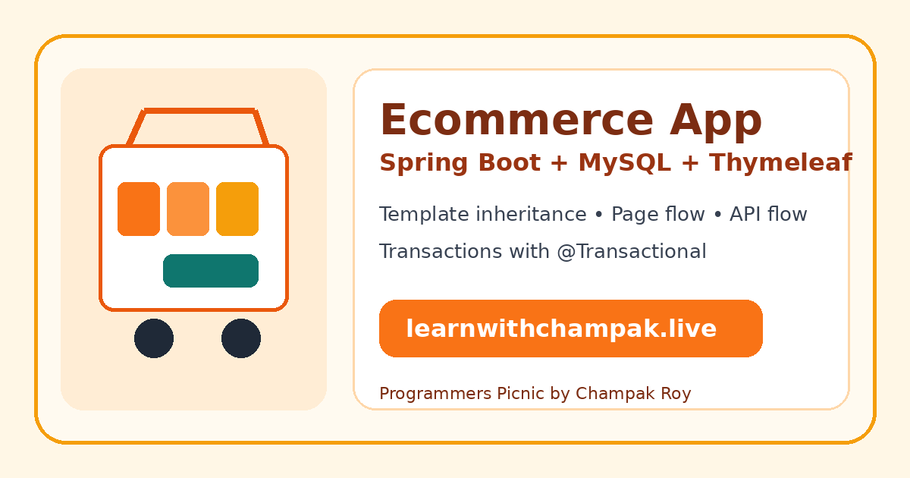

Spring Boot
Main framework for the application.
Official Spring Boot documentationLearn a complete ecommerce system using Spring Boot, MySQL, Thymeleaf, template inheritance, page-based transactions and API-based transactions. This lesson starts from zero and gradually moves toward production thinking.

We are building an ecommerce app with product listing, product details, cart, checkout, order creation, stock reduction, admin product management, REST APIs, and reusable Thymeleaf layout files.
User opens pages like /products, /cart, and /checkout.
JavaScript, mobile apps, or other clients call APIs like /api/products and /api/orders/checkout.
Important writes happen inside service methods using @Transactional.
Use standard and well-known Spring Boot libraries. These links are included so the student knows where to verify real documentation.
Main framework for the application.
Official Spring Boot documentationControllers, routing, page requests, and REST APIs.
Official Spring MVC documentationRepository layer for Product, Cart, Order, and User tables.
Official Spring Data JPA documentationServer-side HTML template engine.
Official Thymeleaf documentationSpring MVC integration with Thymeleaf.
Thymeleaf Spring tutorialDatabase for products, carts, orders, users, and stock.
Official MySQL siteJDBC driver used by Spring Boot to connect with MySQL.
MySQL Connector/J documentationLogin, logout, admin roles, and protected checkout.
Official Spring Security documentationValidation for forms and JSON APIs.
Spring validation documentationSelect these in Spring Initializr: Spring Web, Thymeleaf, Spring Data JPA, MySQL Driver, Validation, DevTools.
<dependencies>
<dependency>
<groupId>org.springframework.boot</groupId>
<artifactId>spring-boot-starter-web</artifactId>
</dependency>
<dependency>
<groupId>org.springframework.boot</groupId>
<artifactId>spring-boot-starter-thymeleaf</artifactId>
</dependency>
<dependency>
<groupId>org.springframework.boot</groupId>
<artifactId>spring-boot-starter-data-jpa</artifactId>
</dependency>
<dependency>
<groupId>com.mysql</groupId>
<artifactId>mysql-connector-j</artifactId>
<scope>runtime</scope>
</dependency>
<dependency>
<groupId>org.springframework.boot</groupId>
<artifactId>spring-boot-starter-validation</artifactId>
</dependency>
<dependency>
<groupId>org.springframework.boot</groupId>
<artifactId>spring-boot-devtools</artifactId>
<scope>runtime</scope>
<optional>true</optional>
</dependency>
</dependencies>| Layer | Purpose | Example |
|---|---|---|
| Controller | Returns Thymeleaf pages. | ProductController |
| API Controller | Returns JSON responses. | ProductApiController |
| Service | Business logic and transactions. | OrderService |
| Repository | Database access. | ProductRepository |
| Entity | Database table mapping. | Product, CartItem, Order |
| Templates | HTML pages and fragments. | base.html, header.html, products/list.html |
Keep one base layout and insert changing page content into it. Header, footer, SEO blocks, script tags, and CSS links stay reusable.
templates/
layout/base.html
fragments/header.html
fragments/footer.html
products/list.html
cart/view.html
checkout/form.html
admin/products/form.htmlThe page controller and API controller should both call the same service method. This prevents duplicate business logic.
@Service
public class OrderService {
@Transactional
public Order placeOrder(CheckoutRequest request) {
// 1. Validate cart
// 2. Create order
// 3. Create order items
// 4. Reduce product stock
// 5. Clear cart
// If anything fails, the whole transaction rolls back.
}
}After every important step, check the URL, output, database, and browser console.
Run:
mvn spring-boot:runOpen:
http://localhost:8080You should see: the app responds. If no home page exists yet, a Whitelabel Error Page is acceptable at this stage.
Create: HomeController and home.html.
Open:
http://localhost:8080/You should see: ecommerce home page with header, hero, and footer.
Create: base.html, header.html, footer.html, home.html.
Open:
http://localhost:8080/You should see: header and footer loaded from fragments, with home content inside the base layout.
CREATE DATABASE ecommerce_db;spring.datasource.url=jdbc:mysql://localhost:3306/ecommerce_db
spring.datasource.username=root
spring.datasource.password=your_password
spring.jpa.hibernate.ddl-auto=update
spring.jpa.show-sql=trueRestart: mvn spring-boot:run
You should see: no database connection error.
Create: Product entity.
SHOW TABLES;You should see: a product/products table in MySQL.
Open:
http://localhost:8080/productsYou should see: product cards with name, price, stock, image, and Add to Cart button.
Open:
http://localhost:8080/api/productsYou should see JSON:
[
{"id":1,"name":"Laptop","price":55000.0,"stock":10}
]Click: Add to Cart on a product.
Open:
http://localhost:8080/cartYou should see: the chosen product in cart with quantity and total price.
fetch("/api/cart/add", {
method: "POST",
headers: { "Content-Type": "application/json" },
body: JSON.stringify({ productId: 1, quantity: 2 })
})
.then(res => res.json())
.then(console.log);You should see: success: true. Then open /cart and see the item.
Open:
http://localhost:8080/checkoutYou should see: order confirmation, order ID, reduced stock, and empty cart after success.
fetch("/api/orders/checkout", {
method: "POST",
headers: { "Content-Type": "application/json" },
body: JSON.stringify({
customerName: "Test User",
address: "Test Address",
paymentMode: "COD"
})
})
.then(res => res.json())
.then(console.log);You should see: order ID in JSON, order saved in MySQL, stock reduced, and cart cleared.
Open DevTools → Network → JS.
You should see status 200 for: app.js, cart.js, api-demo.js, speak.js.
Open page URLs:
http://localhost:8080/
http://localhost:8080/products
http://localhost:8080/cart
http://localhost:8080/checkout
http://localhost:8080/admin/productsOpen API URLs:
http://localhost:8080/api/products
http://localhost:8080/api/cart
http://localhost:8080/api/ordersYou should prove:
This page uses numbered speak tags exactly as required by the speaking system: speak0, speak1, speak2, and so on. The speaking JavaScript reads elements whose IDs start with speak and match the numeric pattern.
Open DevTools Console and run:
[...document.querySelectorAll('[id^="speak"]')].map(x => x.id)You should see: speak0, speak1, speak2, speak3, and more numbered speak sections.